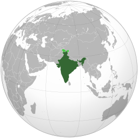

Бангладеш — 1002.
Тайвань — 636.
Південна Корея — 491.

Природні чинники розглядаються нами як важлива умова та ресурс розвитку і трансформації розселення.
також одні з найважливіших чиників є політика наприклад коли в країні війна велика частина людей виїжжяють
Бангладеш — 1002.
Тайвань — 636.
Південна Корея — 491.
Індія-1,429 млрд
Китай-1,411 млрд
США-336 млн